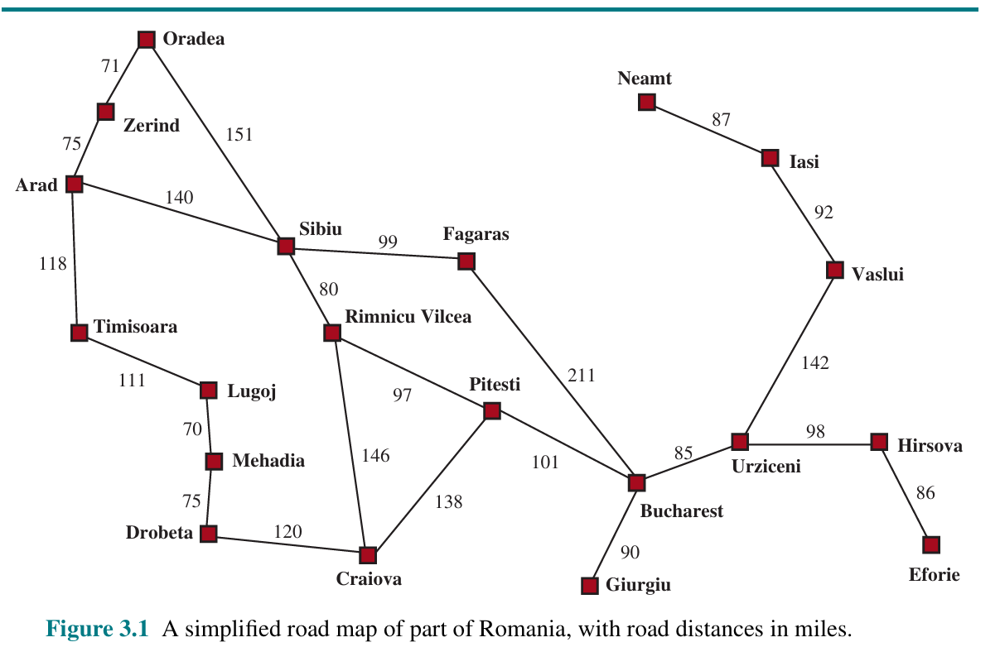

Conteúdo programático
Modelagem do problema de rotas
Busca informada e heurística h(n)
Fila de prioridade com heapq
Implementação da busca gulosa
Custo acumulado g(n) e prioridade f(n)
Implementação do A*
Comparação guiada e admissibilidade
Aula 05 · Busca informada
Modele a viagem, organize a fronteira e compare busca gulosa e A* no mapa da Romênia.
Visão da aula
Vamos representar uma viagem de Arad a Bucharest e implementar busca gulosa e A*, explicando as escolhas da fronteira e o papel da admissibilidade.
Formulação do problema
Precisamos sair de Arad e chegar a Bucharest percorrendo a menor distância total. Considere estradas transitáveis nos dois sentidos, com distâncias fixas. Trânsito, combustível e tempo de viagem não fazem parte deste modelo.

Estado e caminho são diferentes: "Sibiu" é um estado; ["Arad", "Sibiu"] é um caminho. Podemos chegar à mesma cidade por caminhos com custos diferentes.
mapa = {
"Arad": [("Zerind", 75), ("Sibiu", 140), ("Timisoara", 118)]
}
# Cada tupla contém: (cidade de destino, custo da ação).
# Este trecho mostra apenas uma entrada do mapa.Escreva a entrada de Sibiu a partir do mapa. Inclua todas as estradas diretamente conectadas a ela. Explique por que Bucharest não é um sucessor direto de Sibiu.
Função heurística
A heurística h(estado) estima o custo restante até o objetivo. Neste mapa, usamos a distância em linha reta até Bucharest, em quilômetros. A estrada pode fazer curvas e passar por outras cidades; por isso, a estimativa não é o custo real do percurso.
| Cidade | h: linha reta até Bucharest |
|---|---|
| Sibiu | 253 km |
| Fagaras | 176 km |
| Rimnicu Vilcea | 193 km |
| Bucharest | 0 km |
Entre Fagaras e Rimnicu Vilcea, qual parece mais perto do destino? O valor 176 significa que existe uma estrada de Fagaras a Bucharest com 176 km?
Execute este bloco uma vez. O dicionário mapa usa o mesmo formato da prática: a chave é a cidade atual, e cada tupla contém uma cidade vizinha e o custo da estrada. Cada conexão aparece nos dois sentidos. A função sucessores devolve pares (estado, custo); a função heuristica consulta a tabela de estimativas.
# Cada cidade possui uma lista de (cidade vizinha, custo da estrada).
# As conexões estão registradas nos dois sentidos.
mapa = {
"Arad": [("Zerind", 75), ("Sibiu", 140), ("Timisoara", 118)],
"Zerind": [("Arad", 75), ("Oradea", 71)],
"Sibiu": [("Arad", 140), ("Oradea", 151), ("Fagaras", 99), ("Rimnicu Vilcea", 80)],
"Timisoara": [("Arad", 118), ("Lugoj", 111)],
"Oradea": [("Zerind", 71), ("Sibiu", 151)],
"Lugoj": [("Timisoara", 111), ("Mehadia", 70)],
"Mehadia": [("Lugoj", 70), ("Drobeta", 75)],
"Drobeta": [("Mehadia", 75), ("Craiova", 120)],
"Craiova": [("Drobeta", 120), ("Rimnicu Vilcea", 146), ("Pitesti", 138)],
"Rimnicu Vilcea": [("Craiova", 146), ("Sibiu", 80), ("Pitesti", 97)],
"Pitesti": [("Craiova", 138), ("Rimnicu Vilcea", 97), ("Bucharest", 101)],
"Fagaras": [("Sibiu", 99), ("Bucharest", 211)],
"Bucharest": [("Fagaras", 211), ("Pitesti", 101), ("Giurgiu", 90), ("Urziceni", 85)],
"Giurgiu": [("Bucharest", 90)],
"Urziceni": [("Bucharest", 85), ("Hirsova", 98), ("Vaslui", 142)],
"Hirsova": [("Urziceni", 98), ("Eforie", 86)],
"Eforie": [("Hirsova", 86)],
"Vaslui": [("Urziceni", 142), ("Iasi", 92)],
"Iasi": [("Vaslui", 92), ("Neamt", 87)],
"Neamt": [("Iasi", 87)],
}
# Distâncias em linha reta até Bucharest, em quilômetros.
estimativas = {
"Arad": 366, "Bucharest": 0, "Craiova": 160, "Drobeta": 242,
"Eforie": 161, "Fagaras": 176, "Giurgiu": 77, "Hirsova": 151,
"Iasi": 226, "Lugoj": 244, "Mehadia": 241, "Neamt": 234,
"Oradea": 380, "Pitesti": 100, "Rimnicu Vilcea": 193,
"Sibiu": 253, "Timisoara": 329, "Urziceni": 80,
"Vaslui": 199, "Zerind": 374,
}
estado_inicial = "Arad"
def objetivo_atingido(estado):
return estado == "Bucharest"
def sucessores(estado):
return mapa[estado]
def heuristica(estado):
return estimativas[estado]
Os algoritmos receberão essas funções. O destino desta tabela é Bucharest: mudar o destino exige rever a heurística.
Estrutura da fronteira
A fronteira guarda alternativas que já encontramos e que ainda estão disponíveis para explorar. A cada passo, precisamos escolher qual delas retirar.
Imagine três entradas inseridas nesta ordem: Rimnicu Vilcea, Fagaras e Sibiu. Aqui vamos apenas experimentar a estrutura de dados com cidades do mapa, sem representar uma etapa específica da busca.
| Organização | Regra de retirada | Primeira cidade retirada |
|---|---|---|
| Fila — BFS | A primeira que entrou. | Rimnicu Vilcea. |
| Pilha — DFS | A última que entrou. | Sibiu. |
| Fila de prioridade — usando h | A que tem o menor valor: 193, 176 ou 253. | Fagaras, com 176. |
Usamos uma tupla com dois valores. O primeiro serve para comparar; o segundo identifica a cidade.
entrada = (176, "Fagaras")
# ↑ ↑
# prioridade estadoEssa tupla é uma entrada da fronteira. No mapa, a tupla ("Fagaras", 99) tem outro papel: descreve um sucessor de Sibiu e o custo da estrada. Cada estrutura guarda informações para uma finalidade diferente.
O Python oferece o módulo heapq para organizar uma lista como um heap mínimo: uma estrutura que mantém o menor item na primeira posição. Usaremos duas operações:
heappush(fronteira, entrada): insere uma entrada e ajusta o heap.heappop(fronteira): retira e devolve a menor entrada, ajustando o que restou.from heapq import heappush, heappop
# Começamos com a fronteira vazia.
fronteira = []
# Inserimos cada cidade com sua prioridade.
heappush(fronteira, (193, "Rimnicu Vilcea"))
heappush(fronteira, (176, "Fagaras"))
heappush(fronteira, (253, "Sibiu"))
# Retiramos a entrada de menor prioridade.
entrada = heappop(fronteira)
print(entrada) # (176, "Fagaras")
# Separamos os dois valores da tupla.
prioridade, estado = entrada
print(prioridade) # 176
print(estado) # FagarasFagaras saiu porque tem o menor número, mesmo tendo entrado depois de Rimnicu Vilcea. As outras entradas continuam disponíveis na fronteira.
Consultar não é retirar: fronteira[0] mostra o menor item sem removê-lo. Já heappop o remove. Não use pop() para escolher o menor: ele retira o último elemento da lista.
O heap não mantém a lista inteira ordenada. Ele mantém uma organização suficiente para acessar e retirar o menor. Para exibir as entradas em ordem, podemos usar sorted(fronteira), que cria uma lista ordenada para consulta.
heappop?(100, "Pitesti"). Quem deve sair agora? Justifique.Python compara tuplas da esquerda para a direita. Em (prioridade, cidade), se os números empatarem, ele comparará os nomes. Para usar a ordem de chegada como desempate, acrescentamos um contador antes da cidade.
from itertools import count
ordem = count()
print(next(ordem)) # 0
print(next(ordem)) # 1
print(next(ordem)) # 2Cada chamada de next(ordem) fornece um novo número. Nas buscas, criamos um contador novo e chamamos next uma vez por inserção. Assim, uma entrada mais antiga vence um empate de prioridade. Como esse número é único, Python não precisa comparar os estados nem os caminhos.
Além da cidade a explorar, precisamos guardar como chegamos até ela e quanto esse caminho custou. Por isso, cada item inserido na fronteira terá cinco campos: prioridade, ordem de inserção, estado, caminho e custo acumulado.
# (prioridade, ordem, estado, caminho, custo_acumulado)
entrada = (
176,
0,
"Fagaras",
["Arad", "Sibiu", "Fagaras"],
239
)| Campo | Para que serve? |
|---|---|
| Prioridade: 176 | Decide qual entrada retirar. Neste exemplo da gulosa, é h(Fagaras). |
| Ordem: 0 | Desempata prioridades iguais pela ordem de inserção. |
| Estado: Fagaras | Identifica a cidade que será examinada. |
| Caminho: Arad → Sibiu → Fagaras | Registra a rota encontrada até essa cidade. |
| Custo acumulado: 239 | Soma as estradas do caminho: 140 + 99. |
Na retirada, separamos esses campos em variáveis. O _ recebe a ordem de inserção, que já cumpriu seu papel no desempate:
prioridade, _, estado, caminho, custo = heappop(fronteira)Essa linha será usada dentro dos algoritmos, quando a fronteira contiver entradas com cinco campos. O primeiro exemplo desta seção usava apenas dois campos para apresentar as operações.
Custo das operações: com n entradas, inserir ou retirar custa O(log n), e consultar o menor custa O(1). Isso permite selecionar o próximo item sem ordenar toda a fronteira a cada passo.
Busca gulosa
A gulosa escolhe, entre todas as alternativas na fronteira, a que parece mais perto do objetivo. Ela registra o custo para informar o resultado, mas não o usa na prioridade.
from heapq import heappush, heappop
from itertools import count
def busca_gulosa(estado_inicial, objetivo_atingido, sucessores, heuristica):
# 1. Guardamos prioridade, ordem, estado, caminho e custo.
fronteira = []
ordem = count()
heappush(fronteira, (
heuristica(estado_inicial), next(ordem),
estado_inicial, [estado_inicial], 0
))
visitados = set()
while fronteira:
# 2. Retiramos a alternativa com menor estimativa.
prioridade, _, estado, caminho, custo = heappop(fronteira)
if estado in visitados:
continue
visitados.add(estado)
# 3. Testamos o objetivo depois da retirada.
if objetivo_atingido(estado):
return caminho, custo
# 4. Guardamos alternativas ainda não exploradas.
for sucessor, custo_acao in sucessores(estado):
if sucessor not in visitados:
novo_caminho = caminho + [sucessor]
novo_custo = custo + custo_acao
heappush(fronteira, (
heuristica(sucessor), next(ordem),
sucessor, novo_caminho, novo_custo
))
return None, None
Identifique no código: onde a prioridade é calculada, onde o caminho cresce e onde evitamos expandir novamente uma cidade. Por que guardar o custo não garante uma rota barata?
Previsão: depois de Sibiu, Fagaras tem h=176 e Rimnicu Vilcea tem h=193. A gulosa escolhe Fagaras. Ao gerar Bucharest com h=0, ela o retira em seguida e retorna uma rota de 450 km.
Algoritmo A*
g é o custo do caminho encontrado até a cidade; h estima o que falta; f=g+h estima o total por essa alternativa. g depende do caminho: não é um valor fixo da cidade.
| Alternativa após Sibiu | g: desde Arad | h: até Bucharest | f=g+h |
|---|---|---|---|
| Fagaras | 140 + 99 = 239 | 176 | 415 |
| Rimnicu Vilcea | 140 + 80 = 220 | 193 | 413 |
Qual alternativa o A* retira primeiro? Por que sua escolha difere da gulosa?
Reutilize as importações de heapq e count do bloco anterior. O dicionário melhor_g guarda o menor custo encontrado até cada estado. Quando uma nova rota melhora esse valor, inserimos outra entrada na fronteira, mesmo que a cidade já tenha sido explorada.
def a_estrela(estado_inicial, objetivo_atingido, sucessores, heuristica):
# 1. No início, g = 0. A prioridade é g + h.
fronteira = []
ordem = count()
melhor_g = {estado_inicial: 0}
heappush(fronteira, (
heuristica(estado_inicial), next(ordem),
estado_inicial, [estado_inicial], 0
))
while fronteira:
prioridade, _, estado, caminho, g_atual = heappop(fronteira)
# 2. Ignoramos uma entrada que ficou desatualizada.
if g_atual > melhor_g[estado]:
continue
if objetivo_atingido(estado):
return caminho, g_atual
for sucessor, custo_acao in sucessores(estado):
novo_g = g_atual + custo_acao
# 3. O mesmo estado pode ser alcançado por uma rota melhor.
if sucessor not in melhor_g or novo_g < melhor_g[sucessor]:
melhor_g[sucessor] = novo_g
novo_caminho = caminho + [sucessor]
prioridade = novo_g + heuristica(sucessor)
# 4. Inserimos a nova alternativa; a antiga pode ficar no heap.
heappush(fronteira, (
prioridade, next(ordem),
sucessor, novo_caminho, novo_g
))
return None, None
Por que não copiar apenas o conjunto de visitados da gulosa? No A*, uma cidade pode precisar ser explorada novamente após uma melhoria de custo. Como a entrada antiga pode continuar no heap, o teste g_atual > melhor_g[estado] descarta alternativas desatualizadas. Não precisamos procurar e editar uma tupla dentro do heap.
Bucharest foi alcançada por Fagaras com g=450. Depois, a busca chega a Pitesti com g=317 e encontra uma estrada de 101 km até Bucharest. Calcule novo_g e diga o que deve ser atualizado.
for nome, algoritmo in [("Gulosa", busca_gulosa), ("A*", a_estrela)]:
caminho, custo = algoritmo(
estado_inicial, objetivo_atingido, sucessores, heuristica
)
print(nome, caminho, custo)
Resultados: gulosa — Arad → Sibiu → Fagaras → Bucharest, 450 km; A* — Arad → Sibiu → Rimnicu Vilcea → Pitesti → Bucharest, 418 km.
Experimento comparativo
Use a execução guiada abaixo para acompanhar o mesmo mapa. Antes de avançar cada painel, escolha o próximo estado e justifique com h ou f. Os passos são uma sequência preparada para Arad → Bucharest; o código Python acima executa a busca sobre o mapa completo.
Admissibilidade
Uma heurística é admissível quando não ultrapassa o custo do melhor caminho restante em nenhum estado: h(n) ≤ h*(n). O símbolo h* representa esse melhor custo real. Ele serve para analisar a heurística; não precisa ser conhecido pelo algoritmo durante a busca.
Uma estimativa pode ficar abaixo do custo real ou ser igual a ele. No mapa, a distância em linha reta é um limite inferior à distância por estradas. Estamos comparando quilômetros com quilômetros.
| Caso | h proposto | Melhor custo restante | Respeita a condição? |
|---|---|---|---|
| Fagaras | 176 | 211 | ? |
| Fagaras | 211 | 211 | ? |
| Fagaras | 250 | 211 | ? |
| Pitesti | 100 | 101 | ? |
| Bucharest | 10 | 0 | ? |
Classifique cada linha e explique. Verificar somente Fagaras basta para declarar toda a heurística admissível?
Neste grafo finito, com custos positivos, h não negativa e admissível, h(objetivo)=0 e a implementação que aceita melhorias e reabre estados, A* encontra uma solução de menor custo. Testar o objetivo ao retirá-lo da fronteira faz parte dessa implementação.
Se h superestima, uma rota boa pode receber prioridade artificialmente alta e a garantia de menor custo deixa de valer. Isso não significa que toda execução retornará uma solução ruim. A gulosa, por usar apenas h, não ganha garantia de menor custo só porque a heurística é admissível.
Fechamento
| Estratégia | Quem sai primeiro? |
|---|---|
| BFS | A entrada mais antiga da fila. |
| DFS | A entrada mais recente da pilha. |
| Gulosa | A entrada com menor h. |
| A* | A entrada com menor g+h. |
Antes de encerrar, explique: o que é um estado neste mapa; como obter seus sucessores; por que g e h são diferentes; por que o A* guarda melhor_g; e o que torna uma heurística admissível.
Para estudar o código: execute o modelo, a implementação da gulosa, a implementação do A* e o bloco de comparação, nessa ordem.
Referências
Artificial Intelligence: A Modern Approach. 4. ed. Pearson, 2022. Capítulo 3 — estratégias de busca informada, busca gulosa, A* e heurísticas.
Artificial Intelligence: Structures and Strategies for Complex Problem Solving. 6. ed. Pearson/Addison-Wesley, 2009. Capítulo 4 — busca heurística e best-first search.
Grokking Artificial Intelligence Algorithms. Manning, 2020. Capítulo 3 — heurísticas e busca inteligente.